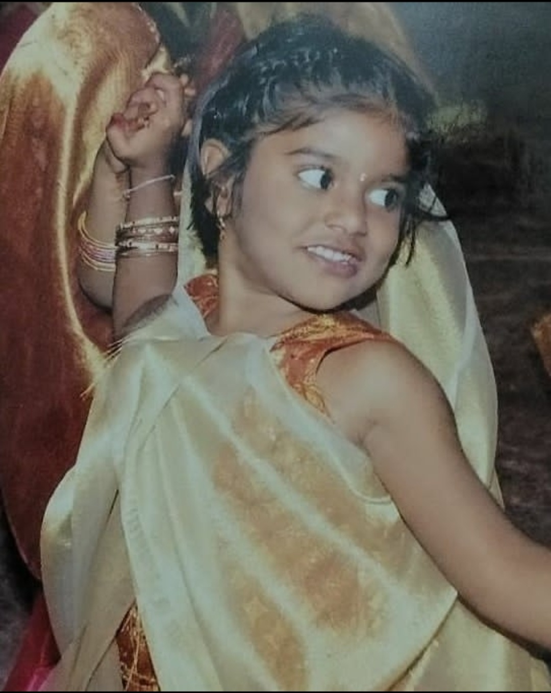
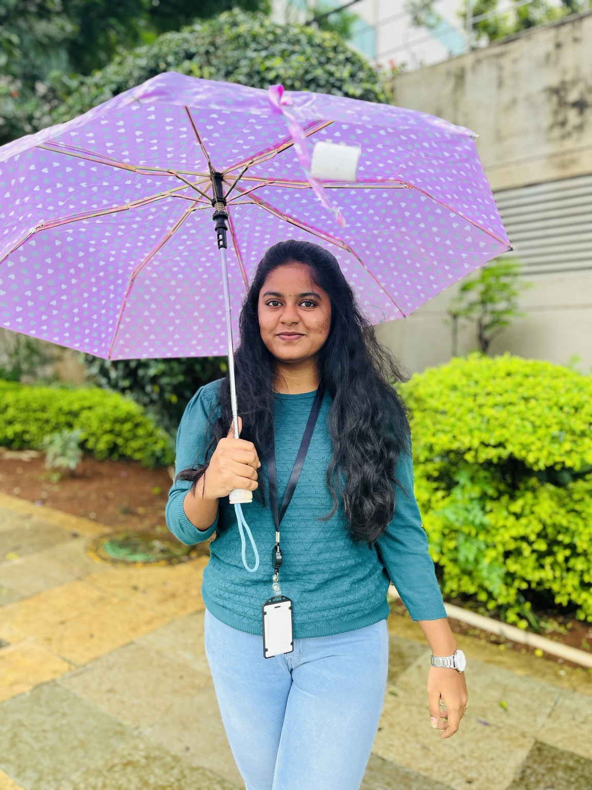
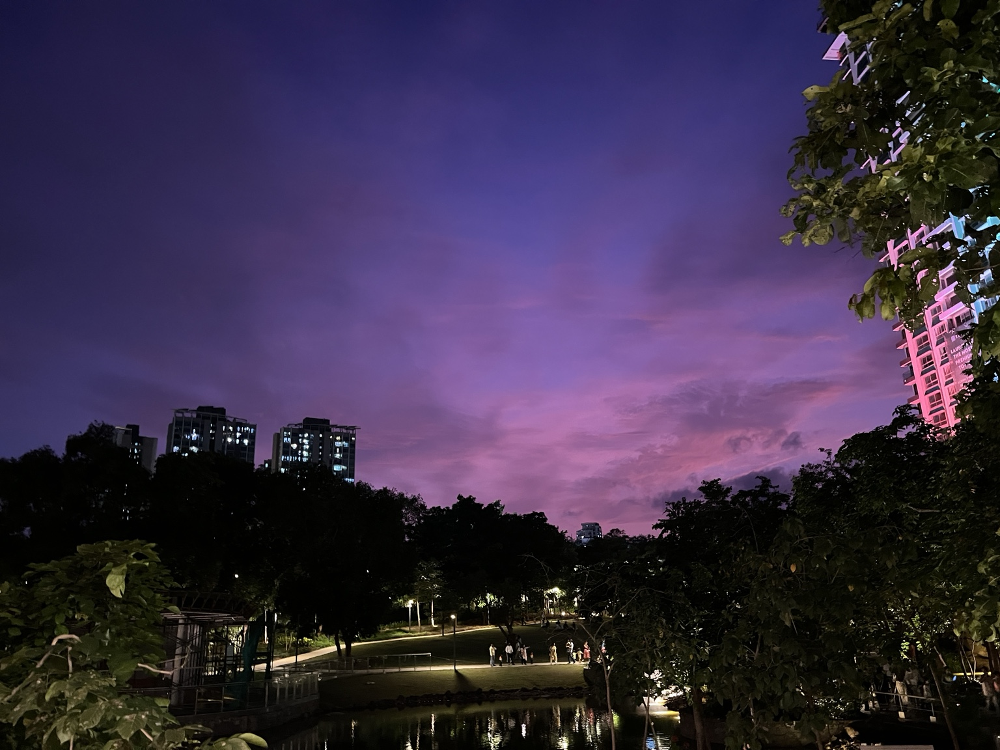
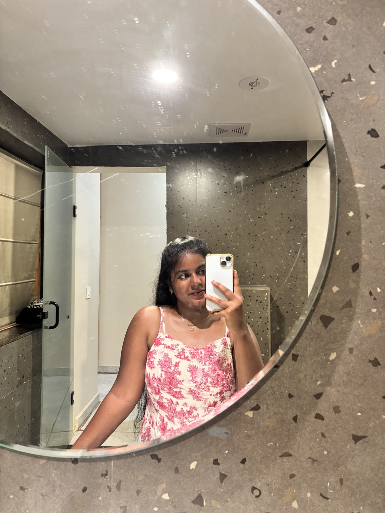
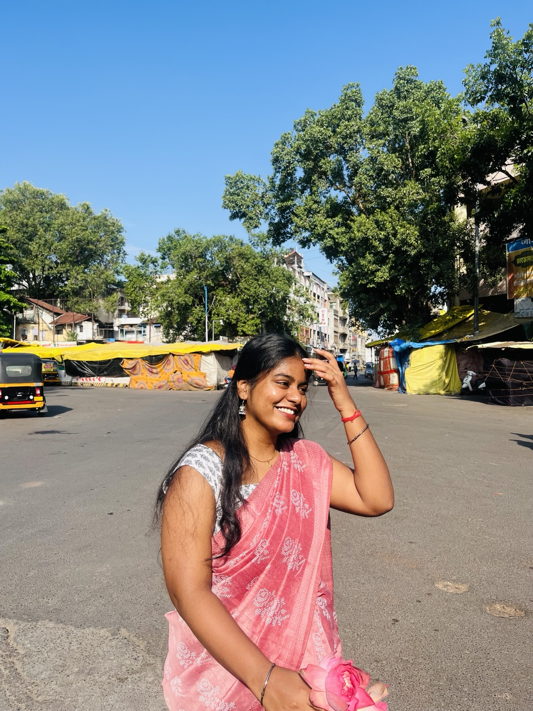
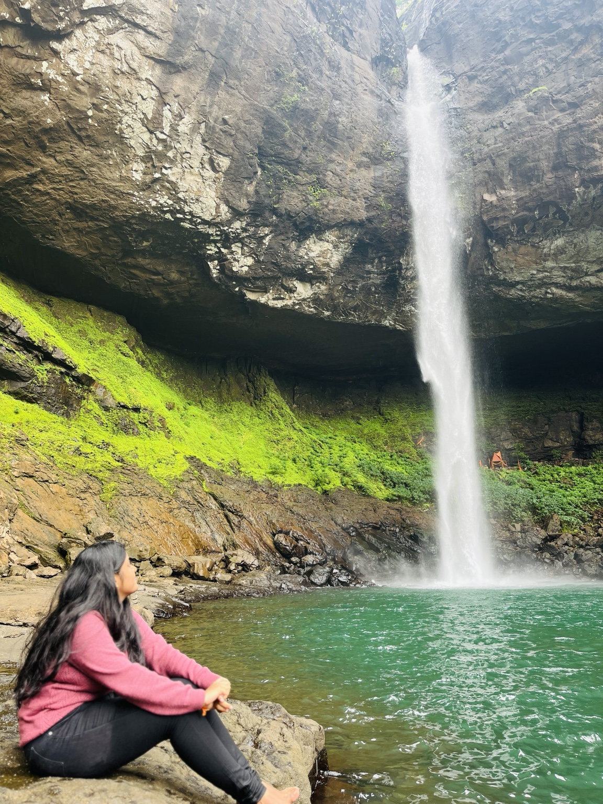
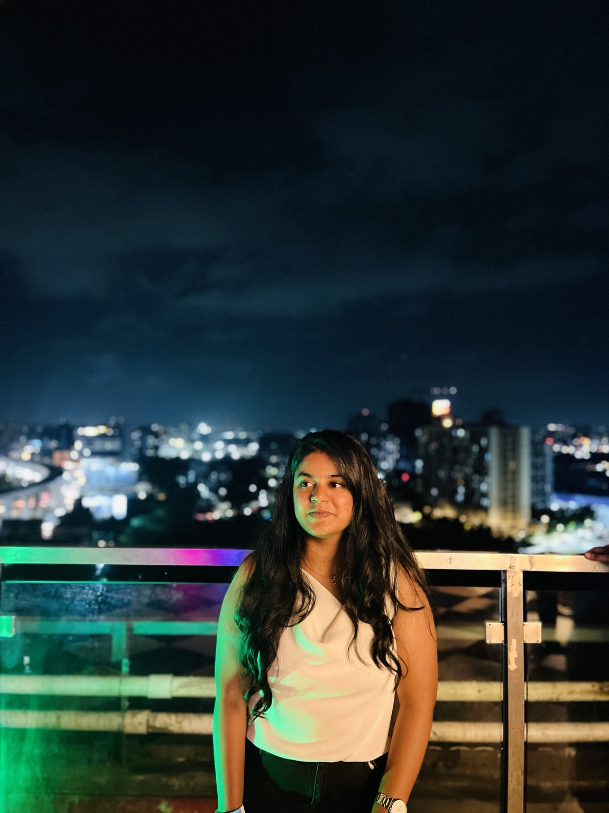
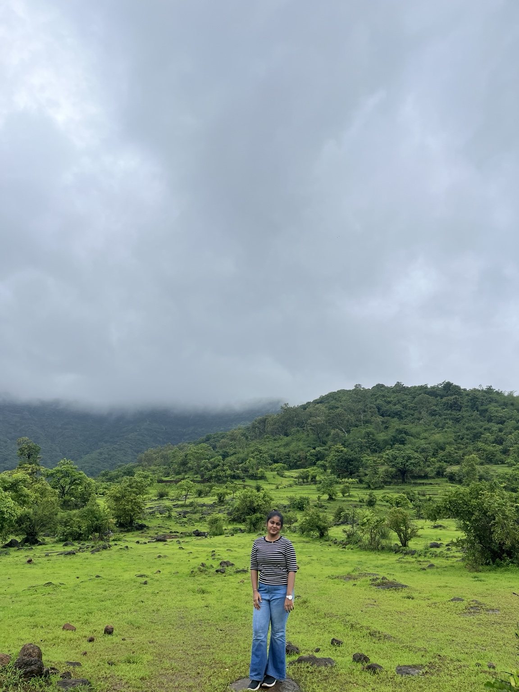
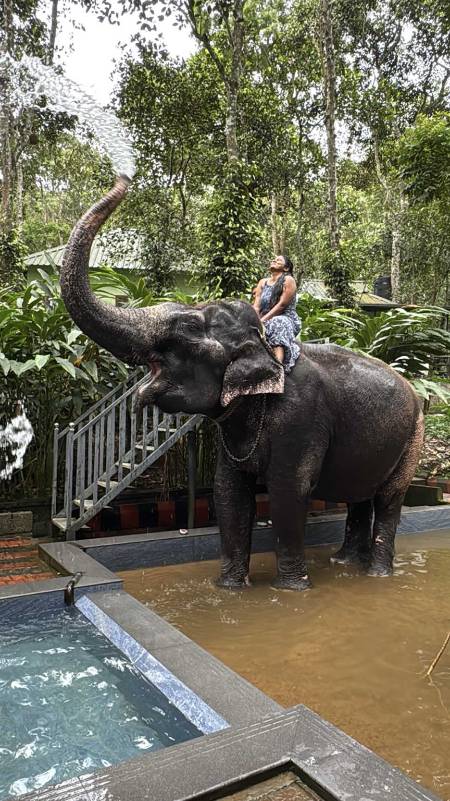

you never know what's gonna happen tomorrow,
so live your life to the fullest.
HELLO, I'M HARSHITHA
somewhere between
code, dance & dreams.
23 • software developer • Bharatanatyam student • professional daydreamer
↓ come wander around

this
is me ✿
is me ✿
01 / a little about me
I'm a little bit
of everything.
I'm a 23-year-old software developer who likes getting lost in .NET development and modernization.
And somewhere outside the world of code, I'm a BA student of Bharatanatyam — currently in my 3rd year, right in the middle of a journey that means a lot to me.
basically... I like building things
and becoming things. ♡
02 / tech
{ }
code &
modernization
.NET development · migration · AI · learning something new and then breaking it until it works.
while (curious) { keepBuilding(); }
03 / dance
✦
a journey called
Bharatanatyam
Third year of my BA journey. A little rhythm, a little discipline, a lot of feeling.
• • • • •
04 / tiny things that make me happy
the little things
are the big things.
☼sunsetsespecially the dramatic ones
✿flowersanywhere, anytime
♡kidstiny humans, huge personalities
♥a lil lovefrom humans who mean it
05 / little things I believe in
words I keep
close to my heart.
❀
love to be a
learner.
stay curious.
stay enthusiastic.
06 / things I do for fun
my kind of
happy chaos.
When I'm bored, I don't really like staying bored. I like finding something new to learn, make, read, dance or dream about.
✈travellingcollecting places & stories
🩰dancingmy favourite way to feel alive
📖reading booksone more chapter, always
✦making thingsespecially when I'm bored
☼being a learnercuriosity is a lifestyle
07 / random pieces of my life
not a portfolio.
just little moments.
childhood memories, rainy days, wandering around, dressing up, dancing, and standing in places that make me stop and stare.








08 / places waiting for me
my little
bucket list.
01
Rishikesh
mountains · river · breathe
02
Ooty
mist · green hills · slow mornings
03
Bali
islands · sunsets · wander
04
Vietnam
food · streets · new stories
somewhere between who I was,
who I am,
and who I'm becoming. ♡
✦ ✿ ♡ ✽ ✦
made with curiosity & a little bit of chaos